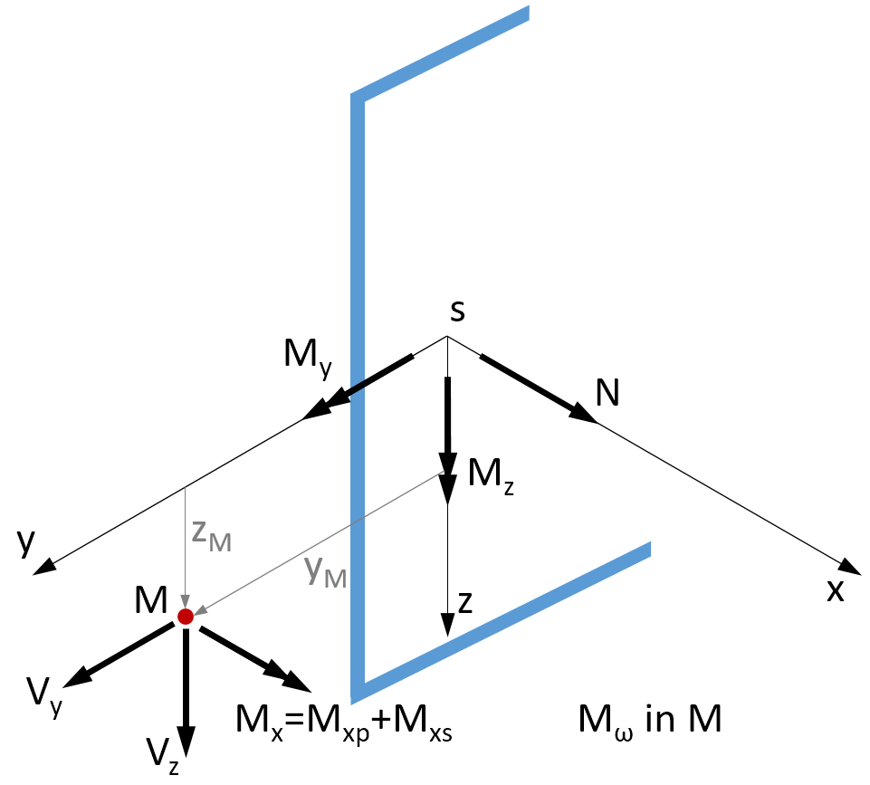
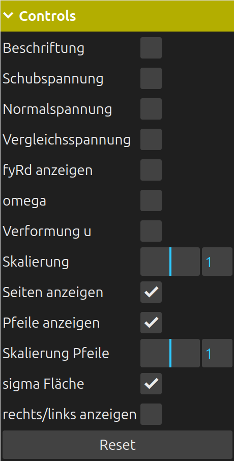
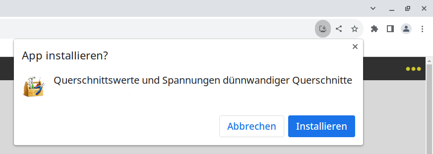

Übersicht
Koordinatensystem und Vorzeichen
Beispiel
Hinweise zur Bedienung der App
Darstellungen 3D
Bezeichnungen
Voreinstellungen
Installation als App auf dem Desktop
Kompatibilität
Hilfe: Meine Tastatur hat keine Minus-Taste, virtuelle Tastatur
Mit dieser Webanwendung können Querschnittswerte und
Spannungen von dünnwandigen Querschnitten berechnet werden. Es wird das Mittellinienmodell (Drahtmodell)
angewendet und zur Lösung wird
die finite Element Methode verwendet [1], [2]. Der Querschnitt wird
ähnlich wie ein Stabwerk oder Fachwerk durch mehrere gerade Elemente
beschrieben, die über Knoten miteinander verbunden sind. Die Theorie
erfordert, dass jedes Element mindestens eine Verbindung zu einem anderen
Element haben muss. Es dürfen also keine Elemente „alleine“ im
Querschnitt sein. Dies bedeutet, dass es von jedem Element einen Pfad zu allen anderen Elementen geben muss.
Die Knotenkoordinaten werden in einem ȳ-z̄ Hilfskoordinatensystem eingegeben, dessen Ursprung
beliebig gewählt werden kann.
Die Elemente haben einen Anfangs- und Endknoten und
können quadratische Schubspannungsverläufe exakt darstellen.
Deshalb ist keine Verfeinerung erforderlich. Die Richtung der
Schubspannungen wird in den Viertelspunkten der Elemente an der
rechten und linken Seite mit Pfeilen angezeigt. Wenn man gedanklich vom Elementanfang zum Elementende blickt,
dann befindet sich die rechte Seite des Elementes an der rechten Hand.
Da die Elemente unterschiedliche Materialeigenschaften haben können, sind Referenzwerte anzugeben. Diese sind auch in einem Stabwerksprogramm als Materialdaten zu verwenden, wenn die berechneten ideellen Querschnittswerte für einen Stab-Querschnitt verwendet werden.
Die Normalspannungen infolge N, My und Mz werden mit den üblichen Formeln der Mechanik unter Annahme des Ebenbleibens der Querschnitte nach Bernoulli berechnet.
Die Schubspannungen sind positiv, wenn sie in Richtung des lokalen Koordinatensystems des Elementes wirken. Die positive lokale Richtung zeigt vom Anfangs- zum Endknoten des Elementes.
Eigenschaften des Programms:
Der Querschnitt kann unsymmetrisch, offen und/oder geschlosssen sein
Linear elastisches Material
Die Breite der Elemente ist elementweise konstant
Jedes Element hat eigene Materialeigenschaften
Berechnung aller Querschnittswerte
Spannungsberechnung infolge von Normal- und Querkräften N, Vy und
Vz,
Biegemomente My und Mz,
Primärer und sekundärer Torsion Mxp , Mxs
sowie Wölbbimoment Mω.
Der Querschnitt wird in der y-z Ebene und in einer 3D-Ansicht
dargestellt. Die Schubspannungen werden parallel zur x-Achse flächig
über die Elementdicke gezeichnet.

Vorzeichen der Schnittgrößen
Vorzeichen Element
Dieses Beispiel wurde in [2] behandelt. Die Querschnittsdaten wurden beim Programmstart automatisch geladen.
Schnittgrößen:
Mxp = 250 kNm; Mxs = 150 kNm; Mω = 10 kNm²
Vy = 1000 kN; Vz = 500 kN
Material:
E = 21.000 kN/cm²; ν = 0,3
Als Dezimal-Trennzeichen ist das Komma oder der Punkt zulässig. Ein Tausender-Trennzeichen ist nicht zulässig.
Um die Knoten- und Elementeingabe zu beschleunigen, können einzelne Zellwerte oder Zeilen der Tabellen kopiert
bzw. generiert
werden.
Es kann durch Drücken der linken Maustaste ein Block selektiert werden.
Nach dem Loslassen der Maustaste erscheint ein Kontextmenü.
Bei Touch screens: Bei Eingabe mit dem Finger oder Stift ist zuerst der
Selektiermodus durch Anklicken der Checkbox über einer Tabelle zu aktivieren. Beim Übersteichen mit dem Finger
oder dem Stift werden dann wie bei der Maus
die selektierten Zellen farblich markiert. Nach Heben des Fingers/Stifts erscheint das Kontextmenu.
Während des Selektiermodus können keine Werte eingegeben werden.
 Kontextmenü
Kontextmenü
Bei iOS erfolgt die Auswahl im Kontextmenü mit einem Doppelklick.
Hinweis: An jedes Tablett und Smartphone läßt sich eine Bluetooth Maus und/oder Tastatur anschließen.
Um den begrenzten Bildschirmplatz auf Smartphones und Tabletts besser zu nutzen, werden die Anzahl der Zeilen in den Tabellen für die Knotenkoordinaten und Elemente durch die Eingabe der Anzahl Knoten und Elemente bestimmt. Deshalb sind erst die neue Anzahl Elemente und Knoten einzugeben und dann die Größe der Tabellen mit Hilfe des Buttons 'resize Tabellen' zu änden. Der Vorgang kann beliebig oft wiederholt werden.
Die Darstellungsoptionen können beliebig kombiniert werden.

Controls
Knoten-Inzidenzen der Elemente
nod1 = Knoten-Inzidenz am Elementanfang
nod2 = Knoten-Inzidenz am Elementende
Ageom = geometrische Querschnittsfläche, Fläche ohne Berücksichtigung der Materialdaten.
Schubspannungen aus primärer Torsion Mxp:
τxs0,L = Schubspannung aus Anteil offener Querschnitt, linke Seite, linearer Verlauf über
Elementbreite
τxs0,R = Schubspannung aus Anteil offener Querschnitt, rechte Seite
τxs1 = Schubspannung aus Anteil geschlossener Querschnitt, konstant über Elementbreite
Schubspannungen aus Querkraft und sekundärer Torsion Mxs:
τxsa = Schubspannung am Elementanfang a
τxsm = Schubspannung in Elementmitte m
τxse = Schubspannung am Elementende e, alle Spannungen konstant über Elementbreite
Alle anderen Bezeichnungen analog.
In dem ꔷꔷꔷ Punkte Menü kann unter anderem die Längeneinheit eingestellt werden. Die Einheit für die Spannung wird
angepasst: mm → N/mm² ; cm → kN/cm² ; m → MN/m² . Die neu eingestellte Einheit
wird sofort in die Eingabeseite übernommen.
Danach ist noch eine Neuberechnung durchzuführen, damit die Einheiten der Ergebnisse angepasst werden.
Desweiteren kann noch die Schriftgröße und die Tabellenfarbe eingestellt werden.
Die Einstellungen der Seite können als Voreinstellung im lokalen Speicher des verwendeten Browsers gespeichert
werden und stehen nach einem
Programmneustart wieder zur Verfügung. Die Voreinstellungen können mit dem darunterliegenden Button wieder
gelöscht werden.
Bei dem lokalen Speicher (local storage) handelt es sich nicht um Cookies. Diese Webanwendung führt alle
Berechnungen
auf dem lokalen Rechner im Browser in JavaScript durch. Es werden keine Daten mit einem Webserver ausgetauscht.
Nach dem Programmstart ist deshalb keine Netzwerkverbindung mehr erforderlich.
Die Option 'Breite Browserfenster' ist nur interessant bei sehr breiten Bildschirmen und wenn der Browser im Fullscreenmodus betrieben wird. Dann kann die Ausgabebreite der Anwendung reduziert werden. Die Bereich wird mittig zentriert.
Diese Anwendung ist als Webanwendung (Web App) programmiert, so dass sie unter allen Betriebssystemen auf dem
Desktop installiert werden kann.
Dafür wird auf dem Desktop ein Icon erstellt. Damit verhält sich die App wie eine aus einem Store installierte
App.
DuennQs wird natürlich weiterhin im installierten Browser ausgeführt, allerdings ohne Bedienelemente wie zum
Beispiel die Adressleiste. Die Installation
unterscheidet sich je nach Betriebssystem, -version und Browser.
Nachdem duennQs erstmalig im Browser gestartet wurde, wählt man unter Android im Chrome Browser rechts oben aus
dem Anwendungsmenü (Drei-Punkte-Menü) die Option 'App installieren'.
Ein Dialog erscheint, der zu bestätigen ist. Danach kann der Browser geschlossen werden. Auf dem Desktop gibt es
jetzt ein neues Icon mit Namen DuennQs.
Für die Installation unter iOS ist der Safari Browser zu verwenden. Hier heißt der Befehl 'Zum Home-Bildschirm' mit einem Addieren-Symbol
Die Installation unter Microsoft Windows ist ähnlich der Installation unter Android. Im Edge Browser steht
folgender Abschnitt im Anwendungsmenü (Drei-Punkte-Menü)

Bei neueren Chrome Versionen werden Sie unter Umständen direkt gefragt, ob eine Installation gewünscht wird,
siehe Symbol rechts in der Adressleiste :

Unter macOS ist der Microsoft Edge or Google Chrome Browser zur Installation zu verwenden.
Der Firefox Browser unterstützt die Installation zur Zeit noch nicht.
Unter den PC-Betriebsystemen Microsoft Windows und Linux kann alternativ mit der F11-Taste in den Vollbildmodus
umgeschaltet werden.
Eine Deinstallation erfolgt durch einfaches Löschen des Icons auf dem Desktop.
Es wurden folgenden Betriebssysteme getestet: Windows 10↑, macOS Catalina 10.15.7↑, Ubuntu 22.04↑, Android 9-13, iOS 15.7.3↑.
Es wurden folgende Browser in der aktuellsten Version getestet: Chrome, Chromium, Edge, Safari, Firefox. Nur die aktuellen Versionen werden getestet und unterstützt.
Probleme: Unter Android Firefox funktioniert die Selektion der Zellen in den Tabellen nicht.
Auf manchen Android Geräten, besonders von Samsung, enthält die numerische Tastatur keine Taste für ein negatives Vorzeichen. Leider überlässt es die HTML Spezifikation dem Gerätehersteller, ob die numerische Tastatur eine Taste für das negative Vorzeichen enthält. Der tiefere Sinn dahinter erschliesst nach den vielen Interneteinträgen zu urteilen wohl nur wenigen Menschen. Es wird in diesen Fällen empfohlen, eine zusätzliche virtuelle Tastatur zu installieren. Als Alternative bietet sich zum Beispiel die Original Google Android Tastatur Gboard aus dem Play Store an. Nach der Installation muss die Tastatur noch aktiviert werden. Am Besten gleich im Play Store durchführen. Später kann man immer zwischen den installierten Tastaturen wechseln ( Icon rechts unten auf der Tastatur).
[1] Matthias Kraus: Computerorientierte Berechnungsmethoden für beliebige Stabquerschnitte des Stahlbaus, Dissertation, Bochum 2005
[2] Matthias Kraus; Rolf Kindmann: Finite-Elemente-Methoden im Stahlbau, 2.Auflage, Ernst W. & Sohn Verlag, 2019